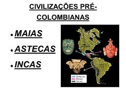

Civilizações pré-colombianas: Incas, Maias e Astecas

As civilizações pré-colombianas foram grandes e sofisticadas sociedades que habitaram as Américas antes da chegada dos europeus no final do século XV. Entre essas civilizações, destacam-se os Incas, Maias e Astecas.
Os Incas eram uma civilização que habitou a região da Cordilheira dos Andes, na América do Sul. Seu império se estendeu por uma vasta área que incluía partes do Peru, Bolívia, Equador, Chile, Argentina e Colômbia. A economia dos Incas era baseada na agricultura em terraços, na criação de animais e no comércio. Eles construíram estradas e pontes para facilitar o transporte e a comunicação dentro do império. Os Incas também desenvolveram um sistema de escrita e uma complexa organização social e política, com o imperador (Sapa Inca) no topo da hierarquia.
Os Maias habitavam a região da Mesoamérica, que inclui partes do México, Guatemala, Belize, Honduras e El Salvador. Eles desenvolveram uma sociedade sofisticada e uma cultura altamente avançada, com um calendário preciso e um sistema de escrita hieroglífico. A economia dos Maias era baseada na agricultura, com destaque para o cultivo de milho, feijão e abóbora. Os Maias também construíram grandes centros urbanos com pirâmides, templos e palácios. A sociedade Maia era dividida em classes sociais, com a realeza no topo da hierarquia.
Os Astecas, por sua vez, habitavam a região central do México. Eles construíram uma grande cidade, Tenochtitlán, em uma ilha no meio de um lago. A economia dos Astecas era baseada na agricultura, com destaque para o cultivo de milho, feijão e abóbora. Eles também eram guerreiros habilidosos e conquistaram muitas outras tribos e cidades, criando um grande império. A sociedade Asteca era dividida em classes sociais, com a nobreza no topo da hierarquia. A religião era uma parte importante da vida Asteca, e os sacrifícios humanos eram comuns em suas práticas religiosas.
As civilizações pré-colombianas eram diversas e avançadas, com diferentes sistemas políticos, sociais e econômicos. No entanto, a chegada dos europeus teve um impacto significativo em suas culturas e sociedades, levando à destruição de muitas delas. Hoje em dia, as culturas e tradições das civilizações pré-colombianas ainda são valorizadas e estudadas por sua importância histórica e cultural.
Fonte: